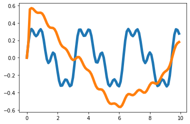
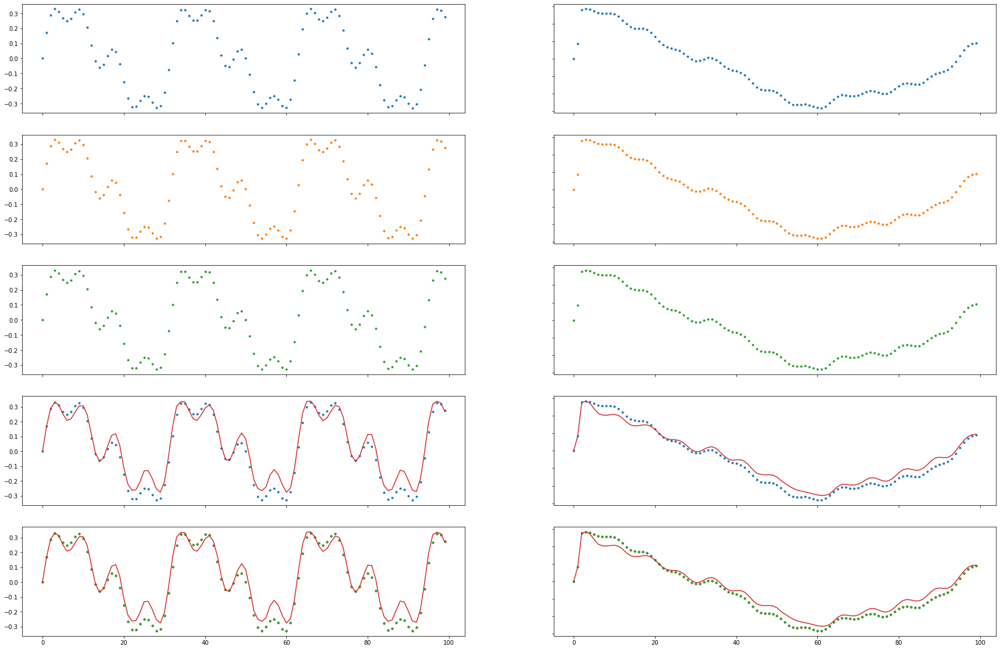

[IT-STGCN] Toy Example Figure(Intro)
import
class Eval_csy:
def __init__(self,learner,train_dataset):
self.learner = learner
# self.learner.model.eval()
try:self.learner.model.eval()
except:pass
self.train_dataset = train_dataset
self.lags = self.learner.lags
rslt_tr = self.learner(self.train_dataset)
self.X_tr = rslt_tr['X']
self.y_tr = rslt_tr['y']
self.f_tr = torch.concat([self.train_dataset[0].x.T,self.y_tr],axis=0).float()
self.yhat_tr = rslt_tr['yhat']
self.fhat_tr = torch.concat([self.train_dataset[0].x.T,self.yhat_tr],axis=0).float()T = 100
t = np.arange(T)/T * 10
x = 0.3*np.sin(2*t)+0.1*np.sin(4*t)+0.1*np.sin(8*t)
eps_x = np.random.normal(size=T)*0
y = x.copy()
for i in range(2,T):
y[i] = 0.35*x[i-1] - 0.15*x[i-2] + 0.5*np.cos(0.5*t[i])
eps_y = np.random.normal(size=T)*0
x = x
y = y
plt.plot(t,x,color='C0',lw=5)
plt.plot(t,x+eps_x,alpha=0.5,color='C0')
plt.plot(t,y,color='C1',lw=5)
plt.plot(t,y+eps_y,alpha=0.5,color='C1')
_node_ids = {'node1':0, 'node2':1}
# _FX1 = np.stack([x,y],axis=1).tolist()
_FX1 = np.stack([x+eps_x,y+eps_y],axis=1).tolist()
_edges1 = torch.tensor([[0,1]]).tolist()
data_dict1 = {'edges':_edges1, 'node_ids':_node_ids, 'FX':_FX1}
#data_dict = itstgcn.load_data('./data/fivenodes.pkl')
save_data(data_dict1, './data/toy_example1.pkl')
data1 = pd.DataFrame({'x':x,'y':y,'xer':x,'yer':y})
save_data(data1, './data/toy_example_true1.csv')
- 학습
- lags4/0.3/filter16
- lags4/0.38/filter8
- lags8/0.38/filter8
- 모형 평가 및 시각화
fig, ((ax1, ax2), (ax3, ax4), (ax5, ax6), (ax7, ax8), (ax9, ax10)) = plt.subplots(5, 2,figsize=(30,20))
# fig.suptitle('Figure 1')
ax1.plot(df1['x'][:],'.',color='C0')
ax2.plot(df1['y'][:],'.',color='C0')
ax3.plot(df1['xer'][:],'.',color='C1')
ax4.plot(df1['yer'][:],'.',color='C1')
ax5.plot(evtor05031.f_tr[:,0],'.',color='C2')
ax6.plot(evtor05031.f_tr[:,1],'.',color='C2')
ax7.plot(df1['x'][:],'.',color='C0')
ax7.plot(evtor05031.fhat_tr[:,0],color='C3')
ax8.plot(df1['y'][:],'.',color='C0')
ax8.plot(evtor05031.fhat_tr[:,1],color='C3')
ax9.plot(df1['x'][:],'.',color='C0')
ax9.plot(df1['xer'][:],'.',color='C1')
ax9.plot(evtor05031.f_tr[:,0],'.',color='C2')
ax9.plot(evtor05031.fhat_tr[:,0],color='C3')
ax10.plot(df1['y'][:],'.',color='C0')
ax10.plot(df1['yer'][:],'.',color='C1')
ax10.plot(evtor05031.f_tr[:,1],'.',color='C2')
ax10.plot(evtor05031.fhat_tr[:,1],color='C3')
for ax in fig.get_axes():
ax.label_outer()